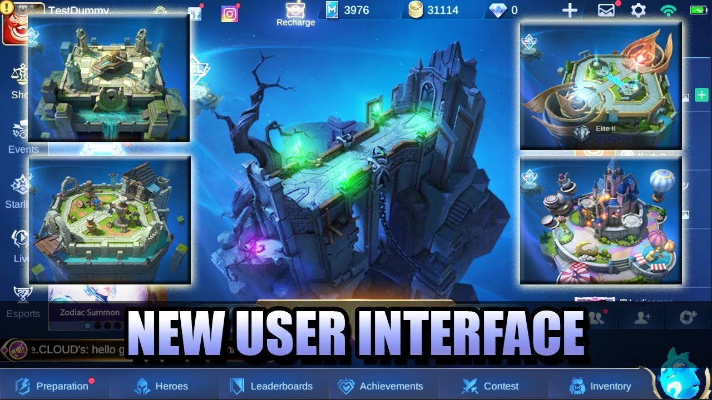

High Performance
Using the unity engine in the game actually improves the performance of Mobile Legends as a whole. Moonton himself in Epicon said that with the engine, Mobile Legends will get a 60% increase in performance. So that players who are excluded from the game can easily relogin into the game. And the game will feel smoother and faster.
NEW Design
part from performance, Moonton will also improve the design of the unterface for you players. Actually this time is not the first time Moonton has improved the design of mobile legends, but on that occasion, the design that Moonton provided for mobile legends will feel more futuristic, simple, and certainly quite impressive.
New Mode
To provide a fresher playing experience, Moonton provides a variety of new modes, and for the 2.0 update. The new mode given is Tower Defense Mode, which is Tower Maze. Where in this Mode, the Player will utilize various Heroes in Mobile Legends, and block the path of the creeps and enemies from entering the existing portal. If you've ever played the Tower Defense genre. You will get a little resemblance from this Tower Maze mode with the genre, the difference is that every time you attack, the hero you use will increase which bar he has, and after full, the Hero will use skills that can annihilate his enemies.